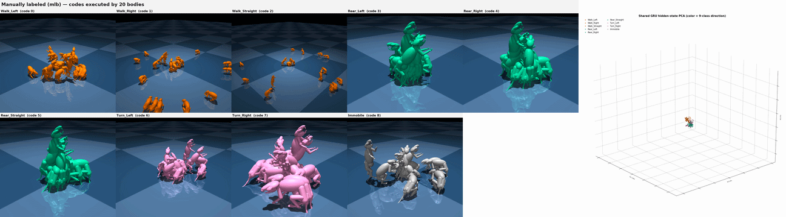

A discrete behavioral code — a syllable from an unsupervised segmenter or a hand-assigned label — is a symbol one can observe but cannot run on a body. Physics-based reinforcement-learning imitators produce realistic motion, but steering one toward a behavior means hand-designing a reward per behavior; recent controllers instead learn a control vocabulary end-to-end, optimizing its codes for reconstruction rather than to match a vocabulary a user could specify.
We introduce Code2Act, which makes an externally specified vocabulary directly executable: a distilled physics controller conditioned on a per-frame code stream compiles each code into a runnable motor program for a 38-actuator biomechanical rodent, so steering is selecting a code rather than engineering rewards. The controller sees only the integer code, so the front end is swappable — the same controller runs an unsupervised segmenter (Keypoint-MoSeq), a learned kinematics-VAE codebook, and a hand-specified label set. Because the distilled latent encodes a state-dependent change signal, each code becomes a one-to-many map reaching the same goal motion from any initial state.
Code-driven motion is distributionally close to expert behavior, each held code is a behaviorally typed attractor the controller defends after perturbation, and the codes are behaviorally distinct — including a codebook the controller never co-adapted with. Because execution tests a code, the same controller also validates a vocabulary: codebooks of 9 or 100 codes realize far fewer distinct motor programs than their nominal size. Code2Act turns a descriptive vocabulary into an executable, steerable, self-auditing control interface.

The hierarchical motor control pathway: prefrontal/premotor cortex generates competing plans, basal ganglia selects discrete initial conditions, and motor cortex (M1) evolves continuous trajectories through the brainstem and spinal cord to muscles.
This project builds on earlier work on dynamic modeling for biomechanical planning. See MimicDyn for the previous iteration that motivated this direction. This work is advised by professor Scott W Linderman at Stanford University and Talmo D Pereira at the Salk Institute for Biological Studies.